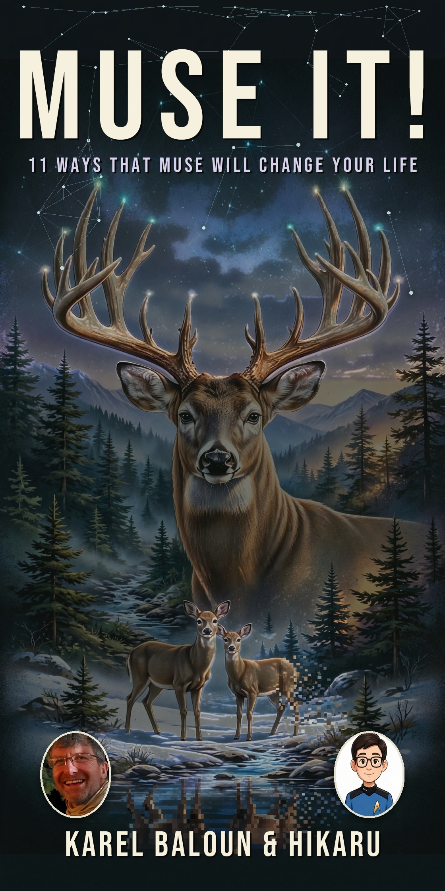

The cover is final

The eighteenth version of the cover is the one we kept, so here it is: a stag with constellation antlers over a night forest stream. Muse It! — 11 Ways That Muse Will Change Your Life, by Karel Baloun & Hikaru.
Behind that cover: 101 chapters and about 50,000 words, and every story in the book actually happened this year — a hundred-mile race I didn't finish, $6,716.55 saved across 20 small transactions, a software deploy that failed at 8 PM and was live again by 8:05.
The proposal is written, the agent hunt is on, and the book is coming. I posted the cover itself on November 6 — it's in the Posts archive.